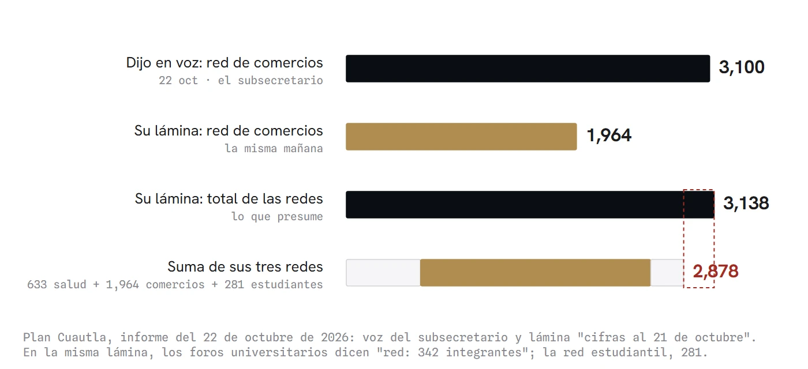
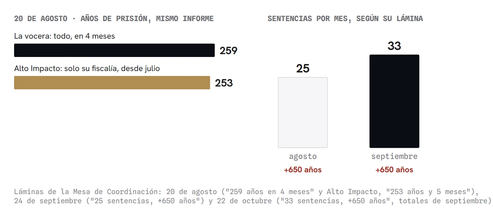
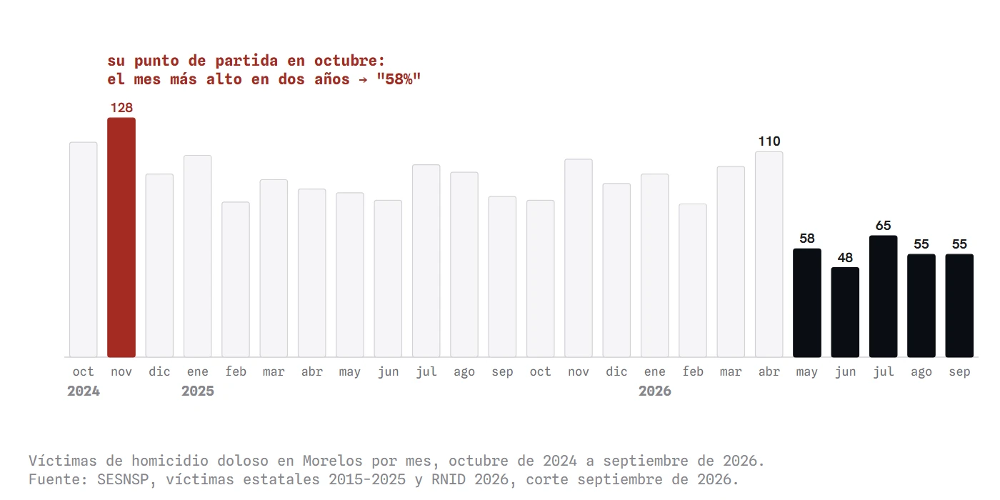
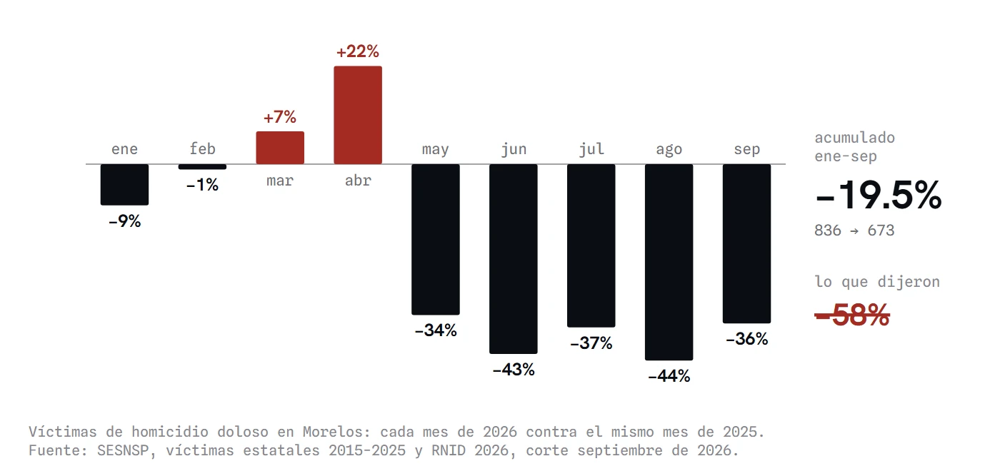

Coordinados, dicen
La Mesa de Coordinación Estatal para la Construcción de Paz y Seguridad de Morelos se reúne cada día hábil, pero sus cifras no se sostienen de un informe al siguiente: una red de protección que el subsecretario cuenta en 3,100 y su propia lámina en 1,964, un total de 3,138 que sus partes no alcanzan, 158 detenidos que se vuelven 67, sentencias que cambian de número y no de años, un primer lugar medido por tasa y un décimo por carpetas, y un homicidio que cada mes se cuenta desde otro punto de partida. Con Alain Desrosières y la estadística como convención, la columna mide la baja real del homicidio contra el mismo periodo del año anterior: 19.5%, no 58%.
La instancia que cada mes rinde cuentas de la seguridad en Morelos se llama Mesa de Coordinación Estatal para la Construcción de Paz y Seguridad. En ella se sientan el subsecretario federal que encabeza el Plan Cuautla, la Secretaría de Seguridad estatal, la 24 Zona Militar, la Guardia Nacional, la Fiscalía General de la República y la Fiscalía del estado. Basta poner uno junto a otro los informes del 20 de agosto, del 24 de septiembre y del 22 de octubre para ver que el nombre promete más de lo que la Mesa cumple en lo más elemental: que las cifras de un mes sigan diciendo lo mismo al mes siguiente, o por lo menos dentro de la misma lámina.
La red que no suma
Empiezo por la cifra más sencilla de verificar. En agosto, el subsecretario José Luis Rodríguez Díaz de León contó que la red de protección a comercios del Plan Cuautla había pasado de 1,100 integrantes, la cifra que dio Omar García Harfuch en su visita, a 1,350. El 22 de octubre dijo, frente a la misma mesa, que esa red "se integraba por 1,100 integrantes" y que "al día de la fecha son 3,100". La lámina que tenía en pantalla en ese momento, con cifras al 21 de octubre, dice otra cosa: la red de protección a establecimientos tiene 1,964 integrantes.
La misma lámina presume, en un recuadro rojo, "3,138 integrantes de redes de protección contra la extorsión". Debajo enumera tres redes: personal de salud con 633, establecimientos con 1,964 y comunidad estudiantil con 281. Esas tres suman 2,878, no 3,138. En la misma diapositiva, el recuadro de los foros universitarios habla de una "red" de 342 integrantes, de modo que los estudiantes aparecen dos veces y con dos números distintos.

Las cifras sociales del plan siguen la misma suerte. En septiembre, la lámina del Plan Cuautla registraba 205 jóvenes en Jóvenes Construyendo el Futuro. En octubre, la lámina dice 209, mientras el subsecretario, al leerla, dijo 200. Son diferencias pequeñas, pero vienen de la misma persona, en el mismo acto, sobre la misma diapositiva.
Detenidos, sentencias y años de prisión
En septiembre, el subsecretario informó de "158 personas detenidas por realizar conductas contrarias a derecho, particularmente relacionadas con actos de carácter extorsivo". El 22 de octubre dijo que en Cuautla "han sido detenidas cerca de 561 personas, de las cuales 67 están vinculadas por actos enfocados a la extorsión", y su lámina habla de "67 detenidos por delitos de extorsión" de mayo al 13 de octubre. Puede haber una explicación técnica, porque detener no es lo mismo que vincular a proceso. Nadie la ofreció, sin embargo, y el saldo que se presentó como logro en septiembre apareció reducido a menos de la mitad en octubre sin una sola aclaración.
Las sentencias recorren la misma ruta. El 20 de agosto, la lámina de la vocera presumió "259 años en 4 meses" de sentencias relevantes; en el mismo informe, la lámina del fiscal de delitos de alto impacto, Luis Eduardo Flores Barrios, sumó 253 años y 5 meses con nueve sentencias de su fiscalía en el periodo que arrancó en julio. Una sola fiscalía especializada, en poco más de un mes, casi igualó lo que la Mesa atribuyó a cuatro meses. En septiembre, el subsecretario habló de 14 sentencias y el fiscal, de 5. Para agosto, la Mesa reportó 25 sentencias con "más de 650 años de prisión"; para septiembre, 33 sentencias con, otra vez, "más de 650 años". Ocho sentencias más, los mismos años.

El reloj que se mueve
Con el homicidio el problema es otro, porque sus cifras son correctas. Las víctimas mensuales que presentó la vocera de la Mesa (110 en abril, 58 en mayo, 48 en junio, 65 en julio, 55 en agosto y 55 en septiembre) coinciden una por una con las del Secretariado Ejecutivo del Sistema Nacional de Seguridad Pública. Lo que se mueve es el punto de partida. En agosto, la Mesa dijo que el homicidio había pasado de 4.3 casos diarios en noviembre de 2024 a 2.1 en julio, una baja de 51%. En septiembre contó "de 3.1 casos diarios en enero de 2026 a 1.8 en agosto", una baja de 52%; con esas mismas cifras, la caída desde enero era de 44%, y el 52 solo aparecía si se contaba desde abril, el mes más violento del año. En octubre volvió a noviembre de 2024: "de 4.3 casos diarios en noviembre del 2024 a 1.8 en septiembre de este año, una reducción cercana al 58% en lo que va de 2026". La oración habla de 2026; el cálculo arranca catorce meses antes, en el mes más alto de los últimos dos años.

Cuando el origen de la serie cambia cada mes, la cifra deja de medir el fenómeno y pasa a medir la elección de quien la presenta.
Hay una forma de medir que no depende de quién elige el arranque: comparar el mismo periodo contra el año anterior, que es como la propia Mesa compara los robos. De enero a septiembre, el homicidio doloso en Morelos pasó de 836 a 673 víctimas, una baja de 19.5%. Con doce meses móviles, de octubre a septiembre, la baja es de 18.8%, casi la misma, así que el resultado no depende del corte. Visto mes contra mes, el año empezó igual o peor que 2025, con marzo arriba 7% y abril 22%, mientras que de mayo en adelante cada mes cae entre 34% y 44%. La baja es real y reciente, y debe reconocerse. Lo que no se sostiene es presentarla cada mes con un reloj distinto.

Alain Desrosières, estadístico del instituto francés de estadística y luego historiador de su oficio, sostuvo que una cifra pública no es un dato que se encuentra, sino una convención que se acuerda: qué se cuenta como igual a qué, desde cuándo y con qué regla. Su valor depende de que esa convención se mantenga, porque solo así un dato de hoy puede compararse con el de ayer. Cuando el origen de la serie cambia cada mes, la cifra deja de medir el fenómeno y pasa a medir la elección de quien la presenta.
La regla que cambia
El mismo problema aparece con el lugar de Cuautla en extorsión. En septiembre, el subsecretario explicó que el plan nació porque Cuautla ocupaba el primer lugar nacional "en actos extorsivos por cada 100,000 habitantes, hablando sobre la base de tasa de población". En octubre abrió su exposición con que Cuautla "pasó del primer lugar al décimo lugar en incidencia de extorsión", y su lámina precisa que el décimo es "en carpetas de investigación". El primer lugar se midió con una regla, la tasa, y el décimo con otra, el número de carpetas. Con las carpetas del Secretariado, corte de septiembre, Cuautla es el cuarto municipio del país con más denuncias por extorsión en 2026 y el quinto en el mes de septiembre. La Mesa no dijo qué medición la coloca en el décimo.
Lo que la lámina no dice
La regla también cambia dentro del cuadro de los delitos "a la baja". Las lesiones por arma de fuego aparecen con la mayor caída, menos 45%, y la vocera las describió como "el indicador más ligado directamente a la violencia armada". La cifra es exacta, pero se explica por un mes: en septiembre de 2026 no se registró en todo Morelos una sola carpeta por lesiones dolosas con arma de fuego, contra seis del septiembre anterior. Ese mismo mes, el estado abrió 36 carpetas por tentativa de homicidio doloso, un subtipo que el Secretariado separó apenas en enero con su nueva metodología y que en lo que va de 2026 suma 321. No afirmo que alguien haya cambiado de cajón a los heridos de bala. Señalo que la regla cambió y que el cuadro se presenta como si no hubiera cambiado.
El robo a negocio con violencia ilustra lo inverso. En agosto la Mesa lo presentó con una baja de 13.8%, en septiembre con 10.5% y en octubre con 1.7%. La diferencia es septiembre: 121 carpetas este año contra 79 del anterior. Hasta el calendario se desliza: la lámina que se mostró el 20 de agosto decía "variación enero-agosto", con agosto todavía en curso, aunque sus cifras corresponden a enero-julio, como dijo la vocera en voz. Un mes después, otra lámina con la misma etiqueta trajo otros números.
El que estaba en la mesa
La pregunta que mejor retrata la falta de coordinación vino al final del informe de octubre. Un reportero recordó que el entonces secretario de Seguridad, Miguel Ángel Urrutia, había dicho que El Güero, detenido y liberado en Totolapan, contaba con orden de aprehensión, y preguntó "en qué momento se perdió este eslabón". Urrutia lo había dicho el 18 de febrero: "hay uno con alias El Apá, otro con alias El Güero", contra los que "ya se tienen órdenes de aprehensión". El fiscal Flores Barrios respondió que "no cuenta con una orden de aprehensión", que la manifestación del entonces secretario "creo que es atribuible a él, no sé por qué o a qué se refirió", y que el dato "es un dato reservado". En la conferencia de febrero, el fiscal estaba sentado en la mesa como titular de Alto Impacto.
Se reúnen diario
Hay algo que la Mesa sí cumple. El subsecretario repite que "nos reunimos todos los días", y es cierto: llevaban 42 sesiones el 24 de septiembre y 62 el 22 de octubre, prácticamente una por cada día hábil desde que arrancó la mesa del Plan Cuautla, el 28 de julio. Se reúnen diario. Lo que no hacen es ponerse de acuerdo.
No hay aquí una acusación de mala fe. Puede haber razones para cada discrepancia: definiciones distintas, cortes de fecha, datos preliminares. Sin embargo, una mesa que se presenta como coordinación tendría que ofrecerlas antes de que alguien las pida, porque cada informe se convierte en la base del siguiente. Lo que se vio de agosto a octubre fue otra cosa: cada funcionario con su cifra, su lámina y su reloj. A mi juicio, se pareció más a una rutina de payasos de carpa, donde uno lanza, otro deja caer y el siguiente saca otra de la manga.
Queda una pregunta para el próximo informe: ¿qué cifra de octubre seguirá siendo cierta en noviembre?
- Gobierno del Estado de Morelos, "Informe mensual de la Mesa de Seguridad, julio-agosto 2026", 20 de agosto de 2026: youtube.com/watch?v=pn4YKx4b2Bk
- Gobierno del Estado de Morelos, "Informe mensual de la Mesa de Coordinación Estatal para la Construcción de Paz y Seguridad", 24 de septiembre de 2026: youtube.com/watch?v=ueirYoA2Uf0 (transmisión: facebook.com/watch/live/?v=915685574685415)
- Gobierno del Estado de Morelos, "Informe mensual de la Mesa de Coordinación Estatal para la Construcción de Paz y Seguridad", 22 de octubre de 2026: youtube.com/watch?v=JiHUQ5Znrp0 (transmisión del Instituto Morelense de Radio y Televisión: facebook.com/watch/live/?v=1648660410127019)
- Gobierno del Estado de Morelos, conferencia de seguridad del 18 de febrero de 2026: youtube.com/watch?v=kZD3_2EAr7Y
- Secretariado Ejecutivo del Sistema Nacional de Seguridad Pública, datos abiertos de incidencia delictiva (víctimas estatales 2015-2025 y RNID 2026; delitos estatales y municipales RNID 2026, corte septiembre de 2026): gob.mx/sesnsp/acciones-y-programas/datos-abiertos-de-incidencia-delictiva
- Secretariado Ejecutivo del Sistema Nacional de Seguridad Pública, Nota metodológica. Comparación histórica de la incidencia delictiva (RNID), 2026, en el mismo portal.
- Alain Desrosières, La política de los grandes números. Historia de la razón estadística, Barcelona, Melusina, 2004, ISBN 978-84-933273-5-4: marcialpons.es/libros/la-politica-de-los-grandes-numeros/9788493327354
Las ligas van a la vista para que cualquiera compruebe por su cuenta. Si alguna dejó de resolver, escríbenos y la reponemos.
SRVO